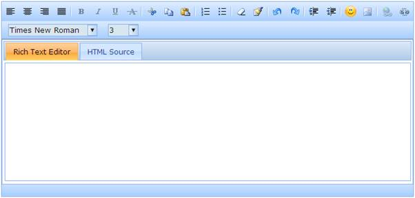

Rich text editor supports disabling individual toolbar items so as to prevent the end-user to use the respective options.
Properties
|
Name |
Description |
Type of property |
Value it accepts |
Dependency |
|
DisableToolbarItems |
Sets the path of the folder within the application from which the image files has to be retrieved. |
List<ToolbarItems>
|
List of toolbar items. |
Requires ShowToolbar set to true |
Using Builder
The following steps explain how to disable individual toolbar items of the rich text editor through builder.
1. In View, call the rich text editor helper, followed by the DisableToolbarItem method with list of toolbar items as:
|
View[ASPX] <%=Html.Syncfusion().RichTextEditor("myRichtextEditor") .DisableToolbarItems(new List<ToolbarItems>{ ToolbarItems.Bold, ToolbarItems.Italic, ToolbarItems.Underline, ToolbarItems.StrikeThrough })%>
|
|
View[cshtml] @{ Html.Syncfusion().RichTextEditor("myRichtextEditor") .DisableToolbarItems(new List<ToolbarItems>{ ToolbarItems.Bold, ToolbarItems.Italic, ToolbarItems.Underline, ToolbarItems.StrikeThrough }).Render();}
|
2. Build and run the application.
Using Properties Model
The following steps explain how to disable individual toolbar items of the rich text editor through properties model.
1. In the Controller, create an instance of RichTextEditorModel, define the DisableToolbarItems property and pass the instance through view-specific data to the view as shown below:
|
[Controller] public ActionResult Index() { RichTextEditorModel myModel = new RichTextEditorModel(); myModel.DisableToolbarItems = new List<ToolbarItems> { ToolbarItems.Bold, ToolbarItems.Italic, ToolbarItems.Underline, ToolbarItems.StrikeThrough };
//pass the model through view data to the view ViewData["myRichTextEditor"] = myModel; return View(); }
|
2. In View, call the rich text editor helper passing the view data key as control id.
|
View[ASPX] <%=Html.Syncfusion().RichTextEditor("myRichtextEditor")%>
|
|
View[cshtml] @{ Html.Syncfusion().RichTextEditor("myRichtextEditor").Render();}
|
3. Build and run the application.
The output is shown in the following screen shot.

Figure 222: Rich text editor with font-style tools disabled